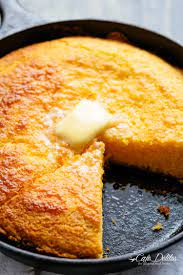

Cornbread

Golden Cornbread
This golden cornbread is a great accessory to any home-grown meal.
Your guests will be asking for this recipe before leaving dinner.
Ingredients
- All purpose flour
- Yellow cornmeal
- Granulated sugar
- Salt
- Baking powder
- Butter
- Egg
- Milk
Steps to Perfection
- Grease a 9-inch cast iron skillet well and set aside. Preheat oven to 400 degrees F
- Mix flour, cornmeal, sugar, salt, and baking powder in a medium mixing bowl.
- Make a well in the center of your dry ingredients and add your butter, milk, and egg. Stir until mixture comes together
- Pour the batter into the prepared pan and bake for 20-25 minutes unitil the top is a deep golden brown Insert a toothpick into the middle of the batter. If it comes out clean, it is done